<!DOCTYPE html PUBLIC "-//W3C//DTD XHTML 1.1//EN"
  "http://www.w3.org/TR/xhtml11/DTD/xhtml11.dtd">
<html xmlns="http://www.w3.org/1999/xhtml" xml:lang="en">
<head>
<meta name="generator" content="jemdoc, see http://jemdoc.jaboc.net/" />
<meta http-equiv="Content-Type" content="text/html;charset=utf-8" />
<link rel="stylesheet" href="jemdoc.css" type="text/css" />
<title>Qian Lou</title>
</head>
<body>
<script type="text/javascript">
var gaJsHost = (("https:" == document.location.protocol) ? "https://ssl." : "http://www.");
document.write(unescape("%3Cscript src='" + gaJsHost + "google-analytics.com/ga.js' type='text/javascript'%3E%3C/script%3E"));
</script>
<script type="text/javascript">
try {
    var pageTracker = _gat._getTracker("UA-15688631-4");
    pageTracker._trackPageview();
} catch(err) {}</script>
<div id="layout-content">
<div id="toptitle">
<h1>Qian Lou</h1>
</div>

<table class="imgtable"><tr><td>
&nbsp;</td>
<td align="left"><p><b>Assistant Professor</b> <br />
<a href="https://www.cs.ucf.edu/">Department of Computer Science</a>, <a href="https://www.ucf.edu/">University of Central Florida</a> <br />
     <b>Email: </b><a href="mailto:qian.lou@ucf.edu"> qian.lou@ucf.edu</a>, 
     <b>Office: </b><a href="https://www.ucf.edu/location/health-sciences-ii/"> HS2 234</a>, 
     <b>Phone: (407) 823-2505</b>
     </p>
<p>Before joining UCF, I worked as Senior Research Scientist at <a href="https://www.sra.samsung.com/artificial-intelligence/">Samsung Research AI Center</a>. 
  I obtained my Ph.D. and M.S. degrees from <a href="https://luddy.indiana.edu/">the Luddy School</a> at <a href="https://indiana.edu/"> Indiana University Bloomington</a>.

<!-- I obtained my Ph.D. and M.S. degrees from <a href="https://luddy.indiana.edu/">the Luddy School</a> at <a href="https://indiana.edu/"> Indiana University Bloomington</a>. --> 

<!--working with <a href="https://zmyhomepage.github.io/zmy_EN/">Mengying Zhao</a> 
and <a href="https://faculty.sdu.edu.cn/julei/en/index.htm">Lei Ju</a>. -->

 My research interests lie in general machine learning, deep learning, and efficient/private systems. 
  I have particular interests in improving the efficiency, privacy, and security of deep learning systems, making deep learning more accessible to the general community, 
  and advancing interdisciplinary research on computer vision, natural language processing, and science tasks by designing novel algorithms, models, and systems.</p>
  <ul>
  <li>Privacy-preserving machine learning with cryptography (fully homomorphic encryption, secure multi-party computation)
    [<a href="https://proceedings.neurips.cc/paper/2019/file/56a3107cad6611c8337ee36d178ca129-Paper.pdf">NeurIPS'19</a>,
     <a href="https://proceedings.neurips.cc/paper/2020/hash/18fc72d8b8aba03a4d84f66efabce82e-Abstract.html">NeurIPS'20a</a>,
     <a href="https://proceedings.neurips.cc/paper/2020/file/6244b2ba957c48bc64582cf2bcec3d04-Paper.pdf">NeurIPS'20b</a>,
     <a href=" https://proceedings.neurips.cc/paper/2020/hash/685ac8cadc1be5ac98da9556bc1c8d9e-Abstract.html">NeurIPS'20c</a>,
     <a href=" http://proceedings.mlr.press/v139/lou21a/lou21a.pdf">ICML'21</a>,
      <a href=" https://openreview.net/pdf?id=Cz3dbFm5u-">ICLR'21</a>,
     <a href=" https://patents.google.com/patent/US20220121947A1/en">US Patent</a>,
       <a href="https://arxiv.org/abs/2010.11796">EMNLP'21</a>,
      <a href="https://dl.acm.org/doi/10.1145/3489517.3530435">DAC'22</a>,
      <a href="https://arxiv.org/abs/2303.13679">DAC'23</a>,
      <a href="https://arxiv.org/pdf/2209.09996.pdf">Arxiv</a>
    ]
  </li>
      <li>Private Deep Learning with Algorithm-Cryptography-Hardware Acceleration [
        <a href="hhttps://ieeexplore.ieee.org/abstract/document/9774559">DATE'22</a>,
        <a href="https://dl.acm.org/doi/10.1145/3489517.3530435">DAC'22</a>,
        <a href="https://dl.acm.org/doi/abs/10.1145/3565478.3572544">NANOARCH'22</a>,
        <a href="https://ieeexplore.ieee.org/abstract/document/10129302">ISQED'23 Invitation</a>
  ]</li>
  </li>
      <li>Integrity Protection of Private Computation and Deep Learning [
        <a href="https://arxiv.org/abs/2303.08886">Arxiv</a>
  ]</li>
  <li>Trojan Attacks, Detection, and Defense on Deep Learning (Vision Transformer, Language Model, SSL) [ 
    <a href="https://openaccess.thecvf.com/content/CVPR2023/papers/Zheng_TrojViT_Trojan_Insertion_in_Vision_Transformers_CVPR_2023_paper.pdf">CVPR'23</a>,
    <a href="https://openreview.net/pdf?id=ja4Lpp5mqc2">ICLR'23</a>,
    <a href="https://arxiv.org/abs/2306.06815">Arxiv</a>,
     <a href="https://arxiv.org/abs/2303.09079">Arxiv</a>
    ]
  </li>
  <li>Lightweight On-device Deep Learning and Algorithm-Hardware Acceleration
  [
    <a href="https://ieeexplore.ieee.org/abstract/document/8587764">ICCAD'18</a>,
    <a href="https://ieeexplore.ieee.org/abstract/document/8715195">DATE'19</a>，
     <a href="https://arxiv.org/pdf/1902.05690.pdf">ICLR'20</a>，
    <a href="https://ieeexplore.ieee.org/abstract/document/9045333">ASP-DAC'20</a>，
    <a href="https://ieeexplore.ieee.org/abstract/document/9116494">DATE'20</a>，
    <a href="https://dl.acm.org/doi/abs/10.1145/3410463.3414626">PACT'20 (Best Paper Nomination)</a>，
    <a href="https://arxiv.org/abs/2112.14938">IJCAI'21</a>，
    <a href="https://arxiv.org/abs/2207.00112">ICLR'22a</a>，
    <a href="https://openaccess.thecvf.com/content/CVPR2022/html/Lou_Lite-MDETR_A_Lightweight_Multi-Modal_Detector_CVPR_2022_paper.html">CVPR'22</a>，
    <a href="https://arxiv.org/abs/2211.09718">EMNLP'22</a>，
    <a href=" https://patents.google.com/patent/US20230106213A1/en">US Patent</a>,
    <a href=" https://patents.google.com/patent/US20230104491A1/en">US Patent</a>,
    <a href="  https://patents.google.com/patent/US20230177338A1/en">US Patent</a>
    ]
  </li>
   </ul>
  <h3><a href="#pubs">Publications</a> | <a href="#group">Research Group</a> | <a href="#teaching">Teaching</a> | <a href="https://scholar.google.com/citations?user=SBYgXLoAAAAJ">Google Scholar</a>
  </h3>

</td></tr></table>

<div class="infoblock">
<div class="blockcontent">
<ul>
<li><p><b>Prospective Students</b>:
We will be recruiting highly motivated Ph.D. students starting <b>Fall 2024</b>.   
Please drop me an email at qian.lou@ucf.edu with your CV, research experiences/interests, and English Proficiency Scores (TOEFL/IELTS, GRE). After the interview, please
 <a href="https://www.ucf.edu/apply-to-ucf/">apply through the CS department</a> and include my name as a possible advisor in your application.
</p>
  <!-- Have questions? Check out <a href="advisor_guide.html">my answers to the PhD Advisor Guide</a>. -->
</li>
</ul>
</div></div>
</p>
<h2>News</h2>
  
<table id="Highlights">
   <tr class="r1"><td class="c1">02 / 2023 </td><td class="c2"> <a href="https://arxiv.org/abs/2208.13049"> 
  TrojViT: Trojan Insertion in Vision Transformers</a> 
   is accepted by CVPR 2023. </td></tr>
  <tr class="r1"><td class="c1">02 / 2023 </td><td class="c2">  <a href="https://arxiv.org/pdf/2303.13679.pdf">
  Primer: Privacy-preserving Transformer on Encrypted Data </a> is accepted by DAC 2023. </td></tr>
  <tr class="r1"><td class="c1">01 / 2023 </td><td class="c2">  <a href="https://openreview.net/pdf?id=ja4Lpp5mqc2">
  TrojText: Test-time Invisible Textual Trojan Insertion </a> is accepted by ICLR 2023. </td></tr>
<tr class="r1"><td class="c1">10 / 2022 </td><td class="c2"> <a href="https://scholar.google.com/citations?view_op=view_citation&hl=en&user=SBYgXLoAAAAJ&sortby=pubdate&citation_for_view=SBYgXLoAAAAJ:-FonjvnnhkoC"> 
  Weighted value decomposition on language model </a>
   is accepted by EMNLP 2022. </td></tr>
   <tr class="r2"><td class="c1">03 / 2022 </td><td class="c2">
    <a href="https://openaccess.thecvf.com/content/CVPR2022/papers/Lou_Lite-MDETR_A_Lightweight_Multi-Modal_Detector_CVPR_2022_paper.pdf">LITE-MDETR</a>
      is accepted by CVPR 2022.</td></tr>
<tr class="r2"><td class="c1">02 / 2022 </td><td class="c2">
<a href=" https://arxiv.org/abs/2202.08814">MATCHA</a>
  is accepted by DAC 2022.</td></tr>
<tr class="r3"><td class="c1">01 / 2022 </td><td class="c2"> 
<a href="https://openreview.net/forum?id=uPv9Y3gmAI5"> Language Model Compression</a> is accepted by ICLR 2022. </td></tr>
<tr class="r4"><td class="c1">01 / 2022 </td><td class="c2"> 
<a href="https://openreview.net/forum?id=GWQWAeE9EpB"> DictFormer</a> is accepted by ICLR 2022.</td></tr>
<tr class="r7"><td class="c1">08 / 2021 </td><td class="c2"> 
<a href="https://arxiv.org/abs/2010.11796"> CryptoGRU</a> is accepted by EMNLP 2021.</td></tr>
<tr class="r8"><td class="c1">05 / 2021 </td><td class="c2"> 
<a href="https://arxiv.org/pdf/2106.00038.pdf"> HEMET</a> is accepted by ICML 2021.</td></tr>
<tr class="r9"><td class="c1">05 / 2021 </td><td class="c2"> Qian received a Luddy Outstanding Research Award.</td></tr>
<tr class="r10"><td class="c1">09 / 2020 </td><td class="c2"> Three papers were accepted by NeurIPS 2020.</td></tr>
<tr class="r17"><td class="c1">
</td></tr></table>

<p>
  <a name="group"></a>
  </p>
<h2>Research Group</h2>
I am fortunate to be able to work with the following exceptional students. <br>
<h3>PhD students</h3>
<table id="Current-Students">
<tr class="r1"><td class="c1">
   </td><td class="c2">
   </td><td class="c2">
   </td><td class="c2">
   </td><td class="c2">
 </td></tr>
<tr class="r5"><td class="c1"><b>Jiaqi Xue (2023 Spring-) </b> </td> <td class="c1"><b>Yancheng Zhang (2023 Fall-) </b> </td>  <td class="c1"><b>Rochana Prih Hastuti (2023 Fall-) </b> </td> <td class="c2"><b>Ardhi Yudha (collaboration)</b> </td><td class="c2"><b>Mansour Al Ghanim (collaboration)</b> </td></tr>
</td></tr></table>

<h3>CAHSI undergraduate students</h3>
<table id="Current-Students">
<tr class="r1"><td class="c1">
   </td>
<td class="c2"></td><td class="c2"></td></tr>
<tr class="r5"><td class="c1"><b>Nicolas Gonzalez</b> </td><td class="c2"></td><td class="c2"></td></tr>
<tr class="r9"><td class="c1">
</td></tr></table>


<h2>Recent Community Services</h2>
<ul>
<li>
<ul>
<li><p>NeurIPS: Reviewer</p>
</li>
<li><p>ICML:Reviewer </p>
</li>
<li><p>ICLR: Reviewer</p>
</li>
<li><p>AAAI: Senior Program Committee</p>
</li>
<li><p>CVPR: Reviewer</p></li>
</li>
<li><p>ECCV: Reviewer</p></li>
</ul>

</li>
</ul>
</li>
</ul>
<p>
<a name="teaching"></a>
</p>
<h2>Teaching</h2>
<ul>
<li><p>2022 Fall: CAP 5106 Computer Architecture</p>
<li><p>2023 Spring: CAP 6614 Current Topics in Machine Learning</p>

</li>
</ul>


<p>
<a name="pubs"></a>
</p>
<h2>Publications</h2>
<h3>Preprints</h3>


  <table class="imgtable"><tr><td>
    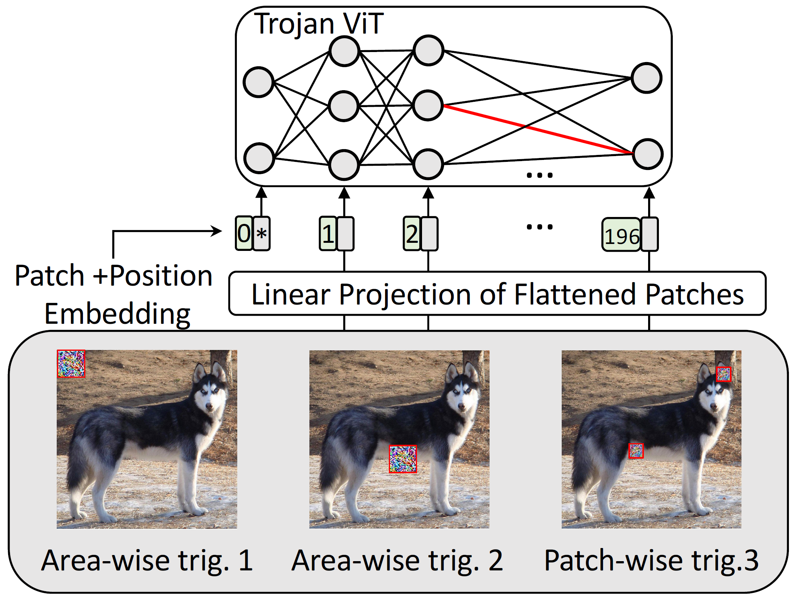&nbsp;</td>
    <td align="left"><p><b>TrojViT: Trojan Insertion in Vision Transformers</b> <br />
    <a href="">Mengxin Zheng</a>,
    <a href="">Qian Lou</a>
     and
    <a href="">Lei Jiang</a> <br />
    <i>arxiv (under my supervision)</i> <br />
    [<a href="https://arxiv.org/abs/2208.13049">Paper (PDF)</a>]
    [<a href="">Code (submitted)</a>] <br />
  
    <p> Directly transplanting CNN-specific backdoor attacks to ViTs yields only a low clean data accuracy and a low attack success rate. In this paper, we propose a 
      stealth and practical ViT-specific backdoor attack TrojViT. Rather than an area-wise trigger used by CNN-specific backdoor attacks, TrojViT generates 
      a patch-wise trigger designed to build a Trojan composed of some vulnerable bits on the parameters of a ViT stored in DRAM memory through patch salience ranking and attention-target loss.</p>
    </td></tr></table>

    <table class="imgtable"><tr><td>
      &nbsp;</td>
      <td align="left"><p><b>Audit and Improve Robustness of Private Neural Networks on Encrypted Data</b> <br />
      <a href="">Jiaqi Xue</a>,
      <a href="">Lei Xu</a>,
      <a href="">Lin Chen</a>,
      <a href="">Weidong Shi</a>,
      <a href="">kaidi Xu</a>, and
      <a href="">Qian Lou</a> <br />
      <i>arxiv (under my supervision)</i> <br />
      [<a href="https://arxiv.org/abs/2209.09996">Paper (PDF)</a>]
      [<a href="">Code (submitted)</a>] <br />
  
      <p> Performing neural network inference on encrypted data without decryption is one popular method to enable privacy-preserving neural networks (PNet) as a service. 
        Compared with regular neural networks deployed for machine-learning-as-a-service, PNet requires additional encoding, e.g., quantized-precision numbers, 
        and polynomial activation. Encrypted input also introduces novel challenges such as adversarial robustness and security. 
        To the best of our knowledge, we are the first to study questions including 
        (i) Whether PNet is more robust against adversarial inputs than regular neural networks? 
        (ii) How to design a robust PNet given the encrypted input without decryption? </p>
      </td></tr></table>


<h3>Refereed publications</h3>

<table class="imgtable"><tr><td>
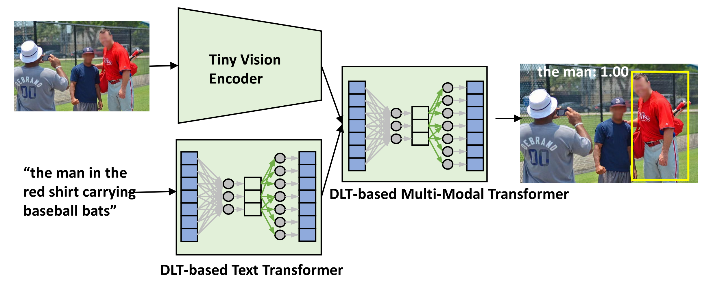&nbsp;</td>
<td align="left"><p><b>Lite-MDETR: A Lightweight Multi-Modal Detector</b> <br />
<a href="">Qian Lou</a>,
<a href="">Yen-Chang Hsu</a>,
<a href="">Burak Uzkent</a>,
<a href="">Ting Hua</a>,
<a href="">Yilin Shen</a>, and
<a href="">Hongxia Jin</a> <br />
<i>The IEEE / CVF Computer Vision and Pattern Recognition Conference (CVPR), 2022</i> <br />
[<a href="https://openaccess.thecvf.com/content/CVPR2022/papers/Lou_Lite-MDETR_A_Lightweight_Multi-Modal_Detector_CVPR_2022_paper.pdf">Paper (PDF)</a>]
 <br />

<p> We present a Lightweight modulated detector, Lite-MDETR, to facilitate efficient end-to-end multi-modal
    understanding on mobile devices. The key primitive is that
    Dictionary-Lookup-Transformormations (DLT) is proposed to replace Linear Transformation (LT) in multi-modal detectors where each weight in Linear Transformation (LT)
    is approximately factorized into a smaller dictionary, index, and coefficient.
</p>
</td></tr></table>

<table class="imgtable"><tr><td>
  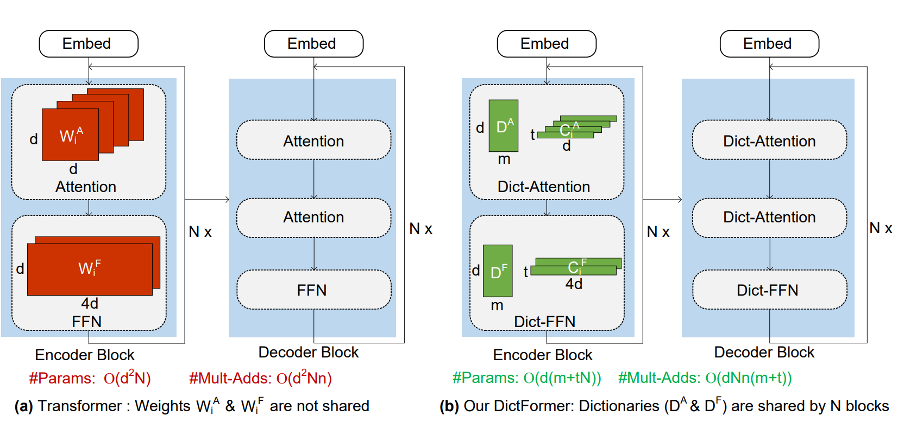&nbsp;</td>
  <td align="left"><p><b>DictFormer: Tiny Transformer with Shared Dictionary</b> <br />
  <a href="">Qian Lou</a>,
  <a href="">Ting Hua</a>,
  <a href="">Yen-Chang Hsu</a>,
  <a href="">Yilin Shen</a>, and
  <a href="">Hongxia Jin</a> <br />
  <i>The International Conference on Learning Representations (ICLR),2022</i> <br />
  [<a href="https://openreview.net/pdf?id=GWQWAeE9EpB">Paper (PDF)</a>]
   <br />
  <p> We introduce DictFormer with efficient shared dictionary to provide a compact,
    fast, and accurate transformer model. DictFormer significantly reduces the redundancy in the transformer's parameters by replacing the prior transformer's parameters with compact, shared dictionary, few unshared coefficients and indices. Also,
    DictFormer enables faster computations since expensive weights multiplications are converted into cheap shared look-ups on dictionary and few linear projections. 
  </p>
  </td></tr></table>


<table class="imgtable"><tr><td>
  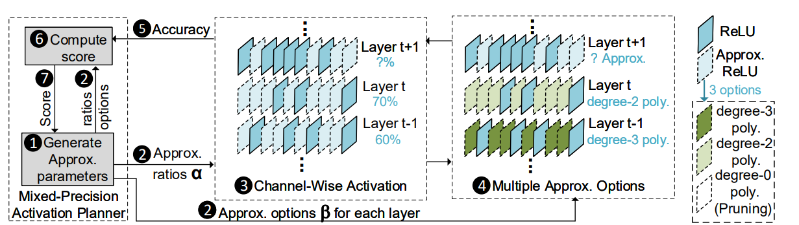&nbsp;</td>
  <td align="left"><p><b>SAFENET: A SECURE, ACCURATE AND FAST NEURAL NETWORK INFERENCE</b> <br />
  <a href="">Qian Lou</a>,
    <a href="">Yilin Shen</a>,
    <a href="">Hongxia Jin</a>, and
    <a href="">Lei Jiang</a> <br />
    <i>The International Conference on Learning Representations (ICLR),2021</i> <br />
    [<a href="https://openreview.net/pdf?id=Cz3dbFm5u-">Paper (PDF)</a>]
    <br />
    <p> A cryptographic
      neural network inference service is an efficient way to allow two parties to execute
      neural network inference without revealing either party's data or model. Nevertheless, existing cryptographic neural network inference services suffer from
      enormous running latency; in particular, the latency of communication-expensive
      cryptographic activation function is 3 orders of magnitude higher than plaintextdomain activation function. And activations are the necessary components of the
      modern neural networks. Therefore, slow cryptographic activation has become
      the primary obstacle of efficient cryptographic inference. In this paper, we propose a new technique, called SAFENet, to enable a Secure, Accurate and Fast
      nEural Network inference service. To speedup secure inference and guarantee inference accuracy, SAFENet includes channel-wise activation approximation with
      multiple-degree options. 
    </p>
    </td></tr></table>

<table class="imgtable"><tr><td>
      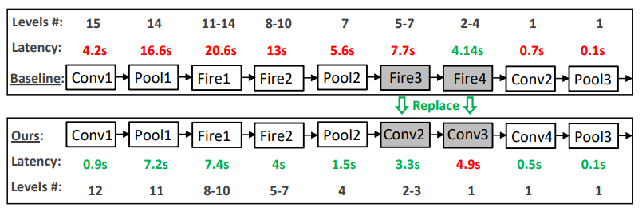&nbsp;</td>
      <td align="left"><p><b>HEMET: A Homomorphic-Encryption-Friendly Privacy-Preserving Mobile Neural Network Architecture</b> <br />
      <a href="">Qian Lou</a>, and
      <a href="">Lei Jiang</a> <br />
      <i> International conference on machine learning (ICML), 2021</i> <br />
      [<a href="http://proceedings.mlr.press/v139/lou21a/lou21a.pdf">Paper (PDF)</a>]
       <br />
      <p> Recently Homomorphic Encryption (HE) is used
        to implement Privacy-Preserving Neural Networks (PPNNs) that perform inferences directly
        on encrypted data without decryption. Prior
        PPNNs adopt mobile network architectures such
        as SqueezeNet for smaller computing overhead,
        but we find naïvely using mobile network architectures for a PPNN does not necessarily achieve
        shorter inference latency. Despite having less parameters, a mobile network architecture typically
        introduces more layers and increases the HE multiplicative depth of a PPNN, thereby prolonging
        its inference latency. In this paper, we propose a HE-friendly privacy-preserving Mobile neural nETwork architecture, HEMET.
      </p>
      </td></tr></table>


<table class="imgtable"><tr><td>
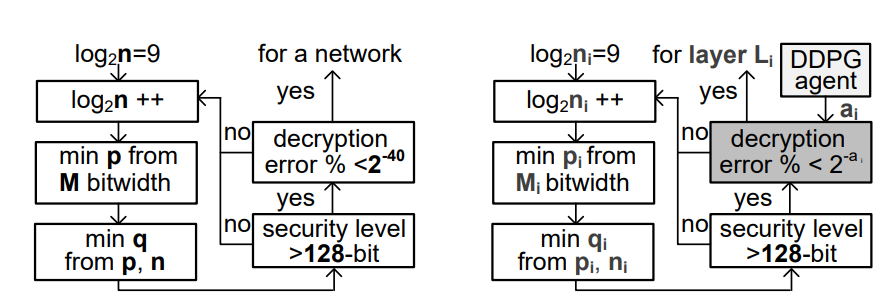&nbsp;</td>
<td align="left"><p><b>AutoPrivacy: Automated Layer-wise Parameter Selection for Secure Neural Network Inference</b> <br />
<a href="">Qian Lou</a>,
<a href="">Song Bian</a>, and
<a href="">Lei Jiang</a> <br />
<i> Advances in Neural Information Processing Systems(NeurIPS), 2020</i> <br />
[<a href="https://proceedings.neurips.cc/paper/2020/file/6244b2ba957c48bc64582cf2bcec3d04-Paper.pdf">Paper (PDF)</a>]
<br />
<p> In this paper, for fast and accurate secure neural network inference, we propose
          an automated layer-wise parameter selector, AutoPrivacy, that leverages deep
          reinforcement learning to automatically determine a set of HE parameters for
          each linear layer in a HPPNN. The learning-based HE parameter selection policy
          outperforms conventional rule-based HE parameter selection policy.
</p>
</td></tr></table>

<table class="imgtable"><tr><td>
          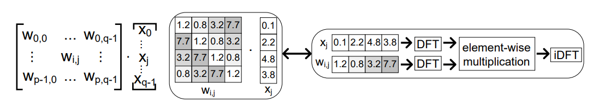&nbsp;</td>
          <td align="left"><p><b>Falcon: Fast Spectral Inference on Encrypted Data</b> <br />
          <a href="">Qian Lou</a>,
          <a href="">Wen-jie Lu</a>,
          <a href="">Cheng Hong</a>, and
          <a href="">Lei Jiang</a> <br />
          <i> Advances in Neural Information Processing Systems(NeurIPS), 2020</i> <br />
          [<a href="https://proceedings.neurips.cc/paper/2020/hash/18fc72d8b8aba03a4d84f66efabce82e-Abstract.html">Paper (PDF)</a>]
          <br />
          <p> In this paper, we propose a fast, frequency-domain deep neural network called
            Falcon, for fast inferences on encrypted data. Falcon includes a fast Homomorphic Discrete Fourier Transform (HDFT) using block-circulant matrices to homomorphically support spectral operations. We also propose several efficient
            methods to reduce inference latency, including Homomorphic Spectral Convolution and Homomorphic Spectral Fully Connected operations by combining the
            batched HE and block-circulant matrices.
          </p>
          </td></tr></table>
  


<table class="imgtable"><tr><td>
            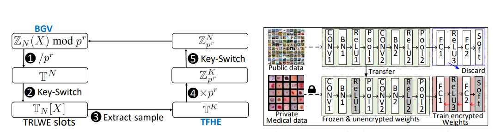&nbsp;</td>
            <td align="left"><p><b>Glyph: Fast and accurately training deep neural networks on encrypted data</b> <br />
            <a href="">Qian Lou</a>,
            <a href="">Bo Feng</a>,
            <a href="">Geoffrey C. Fox</a>, and
            <a href="">Lei Jiang</a> <br />
            <i> Advances in Neural Information Processing Systems(NeurIPS), 2020</i> <br />
            [<a href="https://proceedings.neurips.cc/paper/2020/hash/685ac8cadc1be5ac98da9556bc1c8d9e-Abstract.html">Paper (PDF)</a>]
            <br />
            <p> In this paper, we propose, Glyph, an FHE-based technique to fast and accurately
              train DNNs on encrypted data by switching between TFHE (Fast Fully Homomorphic Encryption over the Torus) and BGV cryptosystems. Glyph uses logicoperation-friendly TFHE to implement nonlinear activations, while adopts vectorialarithmetic-friendly BGV to perform multiply-accumulations (MACs). Glyph further applies transfer learning on DNN training to improve test accuracy and reduce
              the number of MACs between ciphertext and ciphertext in convolutional layers.
            </p>
</td></tr></table>
<table class="imgtable"><tr><td>
  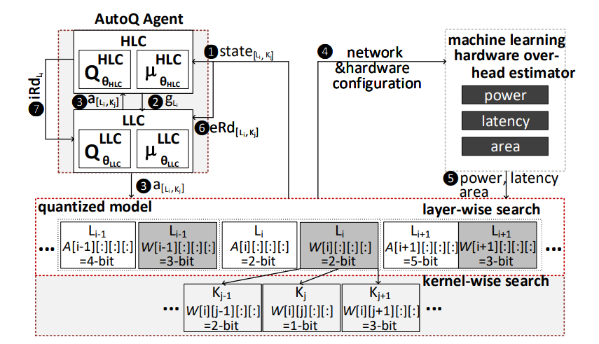&nbsp;</td>
  <td align="left"><p><b>AUTOQ: AUTOMATED KERNEL-WISE NEURAL NETWORK QUANTIZATION</b> <br />
  <a href="">Qian Lou</a>,
  <a href="">Feng Guo</a>,
  <a href="">Minje Kim </a>,  
  <a href="">Lantao Liu </a>,and
  <a href="">Lei Jiang</a> <br />
  <i> International Conference on Learning Representations (ICLR), 2020</i> <br />
  [<a href="https://arxiv.org/pdf/1902.05690.pdf">Paper (PDF)</a>]
  <br />
  <p> It is difficult for even deep reinforcement
    learning (DRL) Deep Deterministic Policy Gradient (DDPG)-based agents to find
    a kernel-wise QBN configuration that can achieve reasonable inference accuracy.
    In this paper, we propose a hierarchical-DRL-based kernel-wise network quantIzation technique, AutoQ, to automatically search a QBN for each weight kernel,
    and choose another QBN for each activation layer.
  </p>
  </td></tr></table>
  <table class="imgtable"><tr><td>
    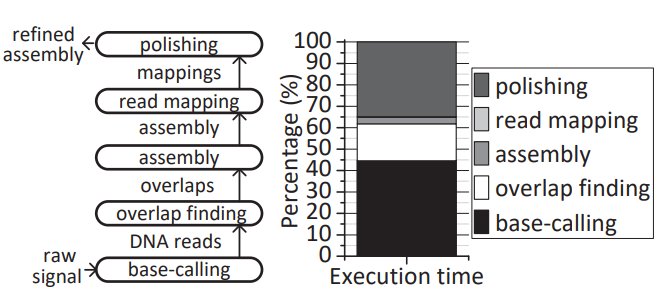&nbsp;</td>
    <td align="left"><p><b>Helix: Algorithm/Architecture Co-design for Accelerating Nanopore Genome Base-calling</b> <br />
    <a href="">Qian Lou</a>,
    <a href="">Sarath Chandra Janga</a>, and
    <a href="">Lei Jiang</a> <br />
    <i>International Conference on Parallel Architectures and Compilation Techniques (PACT), 2020</i> <br />
    [<a href="http://proceedings.mlr.press/v139/lou21a/lou21a.pdf">Paper (PDF)</a>]
    [<a href="">Best paper candidate</a>]
     <br />
    <p> We propose a novel algorithm/architecture codesigned PIM, Helix, to power-efficiently and accurately accelerate
      nanopore base-calling. From an algorithm perspective, we present systematic error-aware training to minimize the number of systematic
      errors in a quantized base-caller. From an architectural perspective,
      we propose a low-power SOT-MRAM-based ADC array to process analog-to-digital conversion operations and improve power
      the efficiency of prior DNN PIMs. Moreover, we revised a traditional
      NVM-based dot-product engine to accelerate CTC decoding operations, and create a SOT-MRAM binary comparator array to process
      read voting.
    </p>
    </td></tr></table>
    <table class="imgtable"><tr><td>
      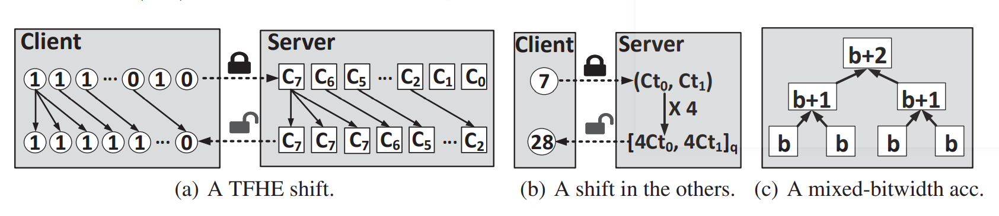&nbsp;</td>
      <td align="left"><p><b>SHE: A Fast and Accurate Deep Neural Network for Encrypted Data</b> <br />
      <a href="">Qian Lou</a>, and
      <a href="">Lei Jiang</a> <br />
      <i> Advances in Neural Information Processing Systems(NeurIPS), 2019</i> <br />
      [<a href="https://proceedings.neurips.cc/paper/2019/file/56a3107cad6611c8337ee36d178ca129-Paper.pdf">Paper (PDF)</a>]
      [<a href="https://github.com/qianlou/SHE"> Code </a>]
      <br />
      <p> we propose a Shift-accumulation-based LHE-enabled deep neural network (SHE) for fast and accurate inferences on encrypted data. We use the binary operation-friendly Leveled Fast Homomorphic Encryption over Torus (LTFHE)
        encryption scheme to implement ReLU activations and max poolings. We also
        adopt the logarithmic quantization to accelerate inferences by replacing expensive
        LTFHE multiplications with cheap LTFHE shifts. We propose a mixed bitwidth
        accumulator to accelerate accumulations. Since the LTFHE ReLU activations, max
        poolings, shifts and accumulations have small multiplicative depth overhead, SHE
        can implement much deeper network architectures with more convolutional and
        activation layers.
      </p>
</td></tr></table>
<table class="imgtable"><tr><td>
  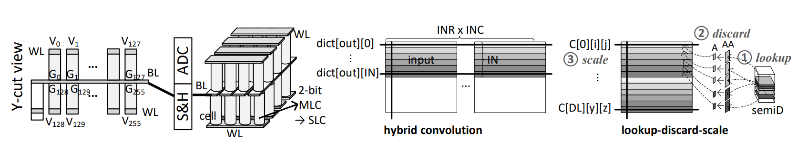&nbsp;</td>
  <td align="left"><p><b>3dict: a reliable and qos capable mobile process-in-memory architecture for lookup-based cnns in 3d xpoint rerams</b> <br />
  <a href="">Qian Lou</a>, 
  <a href="">Wujie Wen</a>,and
  <a href="">Lei Jiang</a> <br />
  <i> IEEE/ACM International Conference on Computer-Aided Design (ICCAD), 2018</i> <br />
  [<a href="https://picture.iczhiku.com/resource/ieee/whIkyDhwsUOSqbbC.pdf">Paper (PDF)</a>]
  <br />
  <p> In this paper, we propose a 3D XPoint ReRAM-based process-in-memory architecture,
    3DICT, to provide various test accuracies to applications with different priorities by lookup-based CNN tests that dynamically exploit the trade-off between test accuracy and latency.
  </p>
</td></tr></table>


<h3>Other publications</h3>

<table class="imgtable"><tr><td>
  &nbsp;</td>
  <td align="left"><p><b> Numerical Optimizations for Weighted Low-rank Estimation on Language Model</b> <br />
    <a href="">Ting Hua</a>,
    <a href="">Yen-Chang Hsu</a>,
    <a href="">Felicity Wang,</a>,
    <a href="">Qian Lou</a>,
    <a href="">Yilin Shen</a>,and 
    <a href=""> Hongxia Jin</a>, <br />
  <i> Empirical Methods in Natural Language Processing (EMNLP), 2022</i> <br />
  [<a href="https://arxiv.org/abs/2211.09718">Paper (PDF)</a>]
  </td></tr></table>

<table class="imgtable"><tr><td>
  &nbsp;</td>
  <td align="left"><p><b> coxHE: A software-hardware co-design framework for FPGA acceleration of homomorphic computation</b> <br />
  <a href="">Mingqin Han</a>,
  <a href="">Yilan Zhu</a>,
  <a href="">Qian Lou</a>,
  <a href="">Zimeng Zhou</a>,
  <a href="">Shanqing Guo</a>,and 
  <a href=""> Lei Ju</a>, <br />
  <i> Design, Automation & Test in Europe Conference & Exhibition (DATE), 2022</i> <br />
  [<a href="https://ieeexplore.ieee.org/abstract/document/9774559">Paper (PDF)</a>]
  </td></tr></table>

<table class="imgtable"><tr><td>
  &nbsp;</td>
  <td align="left"><p><b> MATCHA: A Fast and Energy-Efficient Accelerator for Fully Homomorphic Encryption over the Torus</b> <br />
  <a href="">Lei Jiang</a>,
  <a href="">Qian Lou</a>,and 
  <a href=""> Nrushad Joshi</a>, <br />
  <i> The Design Automation Conference (DAC), 2022</i> <br />
  [<a href="https://arxiv.org/pdf/2202.08814.pdf">Paper (PDF)</a>]
  </td></tr></table>

<table class="imgtable"><tr><td>
  &nbsp;</td>
  <td align="left"><p><b> Language model compression with weighted low-rank factorization</b> <br />
  <a href="">Yen-Chang Hsu</a>,
  <a href="">Ting Hua</a>,
  <a href="">Sung-En Chang</a>,
  <a href="">Qian Lou</a>,
  <a href="">Yilin Shen</a>,and 
  <a href=""> Hongxia Jin</a>, <br />
  <i> International Conference on Learning Representations (ICLR), 2022</i> <br />
  [<a href="https://arxiv.org/pdf/2207.00112.pdf">Paper (PDF)</a>]
  </td></tr></table>

<table class="imgtable"><tr><td>
  &nbsp;</td>
  <td align="left"><p><b> CryptoGRU: Low Latency Privacy-Preserving Text Analysis With GRU</b> <br />
  <a href="">Bo Feng</a>,
  <a href="">Qian Lou</a>,
  <a href="">Lei Jiang</a>, and 
  <a href=""> Geoffrey C Fox</a>, <br />
  <i> Empirical Methods in Natural Language Processing (EMNLP), 2021</i> <br />
  [<a href="https://arxiv.org/pdf/2010.11796.pdf">Paper (PDF)</a>]
  </td></tr></table>


<table class="imgtable"><tr><td>
  &nbsp;</td>
  <td align="left"><p><b> Automatic Mixed-Precision Quantization Search of BERT</b> <br />
  <a href="">Changsheng Zhao</a>,
  <a href="">Ting Hua</a>,
  <a href="">Yilin Shen</a>,
  <a href="">Qian Lou</a>,and 
  <a href="">Hongxia Jin</a>, <br />
  <i> International Joint Conference on Artificial Intelligence (IJCAI), 2021</i> <br />
  [<a href="https://arxiv.org/pdf/2112.14938.pdf">Paper (PDF)</a>]
  </td></tr></table>


<table class="imgtable"><tr><td>
  &nbsp;</td>
  <td align="left"><p><b> LightBulb: A Photonic-Nonvolatile-Memory-based Accelerator for Binarized Convolutional Neural Networks</b> <br />
  <a href="">Farzaneh Zokaee</a>,
  <a href="">Qian Lou</a>,
  <a href="">Nathan Youngblood</a>,
  <a href="">Weichen Liu</a>,
  <a href="">Yiyuan Xie</a>,and 
  <a href=""> Lei Jiang</a>, <br />
  <i> Design, Automation & Test in Europe Conference & Exhibition (DATE), 2020</i> <br />
  [<a href="https://par.nsf.gov/servlets/purl/10167914">Paper (PDF)</a>]
  </td></tr></table>


<table class="imgtable"><tr><td>
  &nbsp;</td>
  <td align="left"><p><b> MindReading: An Ultra-Low-Power Photonic Accelerator for EEG-based Human Intention Recognition</b> <br />
  <a href="">Qian Lou</a>,
  <a href="">Wenyang Liu</a>,
  <a href="">Weichen Liu</a>,
  <a href="">YFeng Guo</a>,and 
  <a href=""> Lei Jiang</a>, <br />
  <i> 25th Asia and South Pacific Design Automation Conference (ASP-DAC), 2020</i> <br />
  [<a href="https://arxiv.org/pdf/2001.11954.pdf">Paper (PDF)</a>]
  </td></tr></table>

<table class="imgtable"><tr><td>
  &nbsp;</td>
  <td align="left"><p><b> Holylight: A nanophotonic accelerator for deep learning in data centers</b> <br />
  <a href="">Weichen Liu</a>,
  <a href="">Wenyang Liu</a>,
  <a href="">Yichen Ye</a>,
  <a href="">Qian Lou</a>,
  <a href="">Yiyuan Xie</a>,and 
  <a href=""> Lei Jiang</a>, <br />
  <i> Design, Automation & Test in Europe Conference & Exhibition (DATE), 2019</i> <br />
  [<a href="https://www.researchgate.net/profile/Qian-Lou-4/publication/333152004_HolyLight_A_Nanophotonic_Accelerator_for_Deep_Learning_in_Data_Centers/links/5e3f3e13458515072d8a9b1b/HolyLight-A-Nanophotonic-Accelerator-for-Deep-Learning-in-Data-Centers.pdf">Paper (PDF)</a>]
  <br />
  </td></tr></table>

<table class="imgtable"><tr><td>
  &nbsp;</td>
  <td align="left"><p><b> BRAWL: A Spintronics-Based Portable Basecalling-in-Memory Architecture for Nanopore Genome Sequencing</b> <br />
  <a href="">Qian Lou</a>,and 
  <a href=""> Lei Jiang</a>, <br />
  <i> IEEE Computer Architecture Letters,2018</i> <br />
  [<a href="https://ieeexplore.ieee.org/abstract/document/8540899">Paper (PDF)</a>]
  <br />
  </td></tr></table>


<table class="imgtable"><tr><td>
&nbsp;</td>
<td align="left"><p><b>Runtime and reconfiguration dual-aware placement for SRAM-NVM hybrid FPGAs</b> <br />
<a href="">Qian Lou</a>,
<a href="">Mengying Zhao</a>, 
<a href="">Lei Ju</a>,
<a href="">Chun Jason Xue</a>,
<a href=""> Jingtong Hu</a>,and 
<a href=""> Zhiping Jia</a>, <br />
<i> IEEE 6th Non-Volatile Memory Systems and Applications Symposium (NVMSA),2017</i> <br />
[<a href="https://www.researchgate.net/profile/Qian-Lou-4/publication/320605536_Runtime_and_reconfiguration_dual-aware_placement_for_SRAM-NVM_hybrid_FPGAs/links/5c755cd8a6fdcc47159e5578/Runtime-and-reconfiguration-dual-aware-placement-for-SRAM-NVM-hybrid-FPGAs.pdf">Paper (PDF)</a>]
<br />
</td></tr></table>


</body>
</html>
